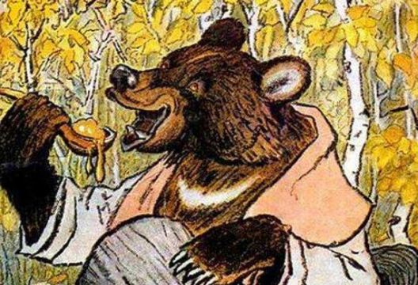
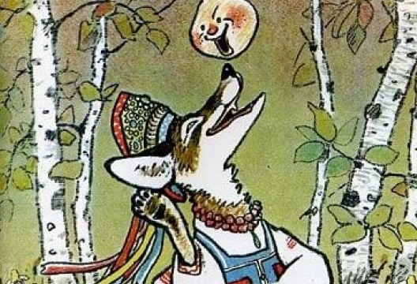

"Колобок" — детский триллер
Ключевыми героями в произведении является Лиса и Колобок, оба героя являются противоположностями друг друга. Если Лиса – это олицетворение хитрости и ласковости, она готова сделать все, чтобы добиться поставленной цели, то Колобок добродушный и простой парень, достаточно смелый и предприимчивый. Герои встречаются, но в их противостоянии побеждает тот, кто оказывается хитрее.
 - Данная сказка показывает, что необходимо больше пользоваться своими мыслительными процессами, а не говорить. Колобок же поступал наоборот, поэтому и остался в проигравших. Он не предположил, что Лиса может сделать собственный выбор и путешествие Колобка закончится.
- Сюжет представляет собой выход незащищенного юного существа во внешний мир, где полно опасностей, которые предстают в форме животных. Тем не менее, колобок уходит от этих опасностей и его поведение также возможно рассматривать как своеобразную инструкцию для юных читателей. Когда сказка завершается трагично для колобка, такой финал становится уроком для слушающего ребенка, и он получает знание о том, что внешний мир может приносить гибель и не следует доверять каждому его представителю.
- Также колобок может олицетворять и человеческую жизнь, а встреченные им звери являются этапами человеческой жизни, которые сменяют друг друга приходя к своему логическому завершению. Если говорить о мистической трактовке, то также сказку некоторые рассматривают как инструкцию или поверхностную схему путешествия души по иномирью. Душа встречает различных духов, которые условно предстают в образах животных и сообщает им особую повторяющуюся формулу-ключ, которая позволяет двигаться на следующий уровень.